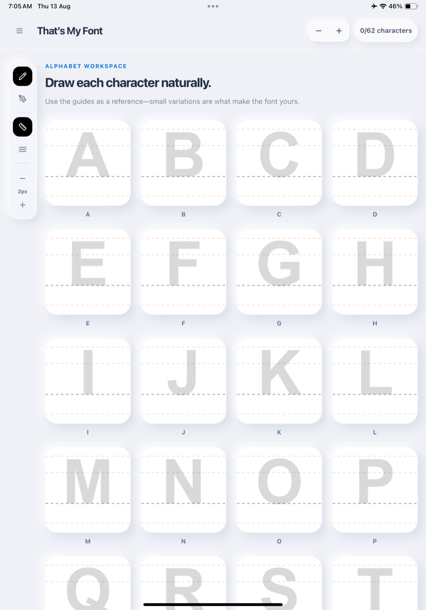
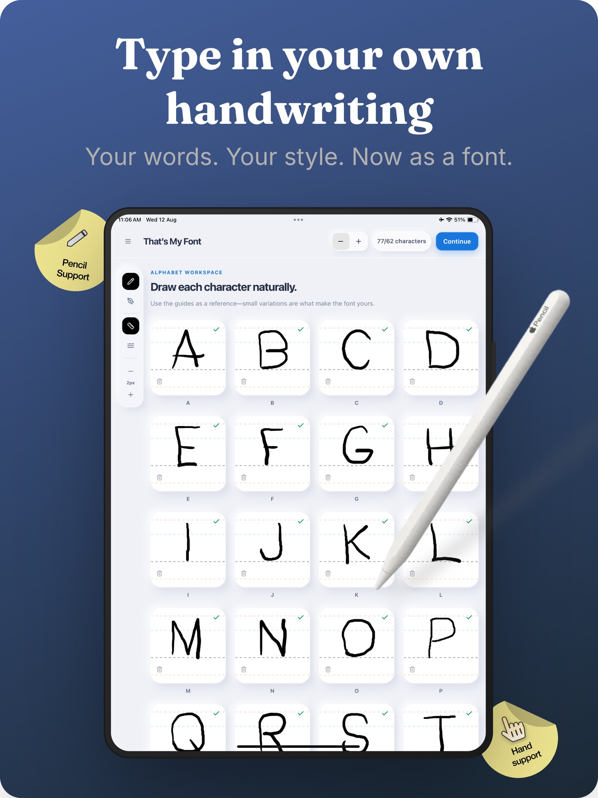
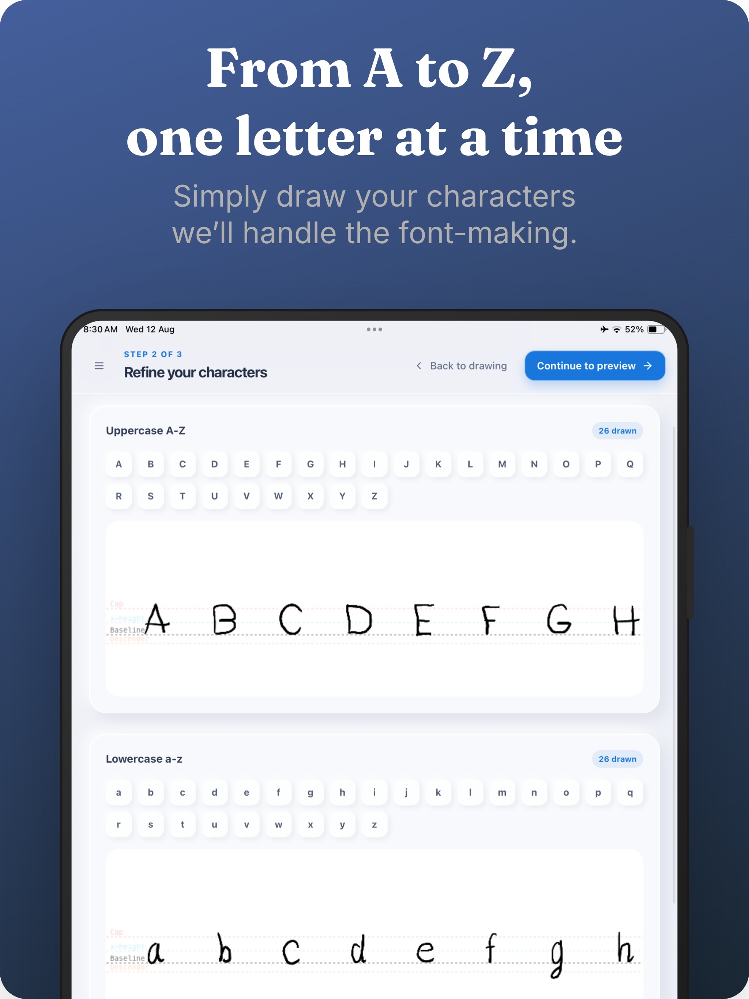
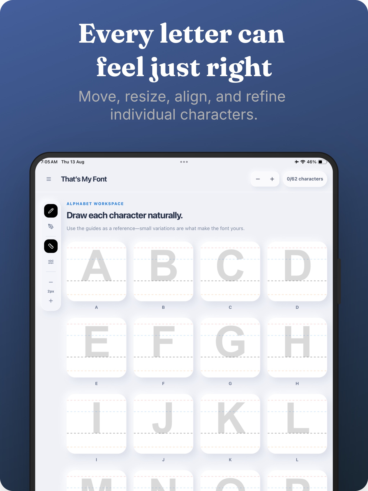
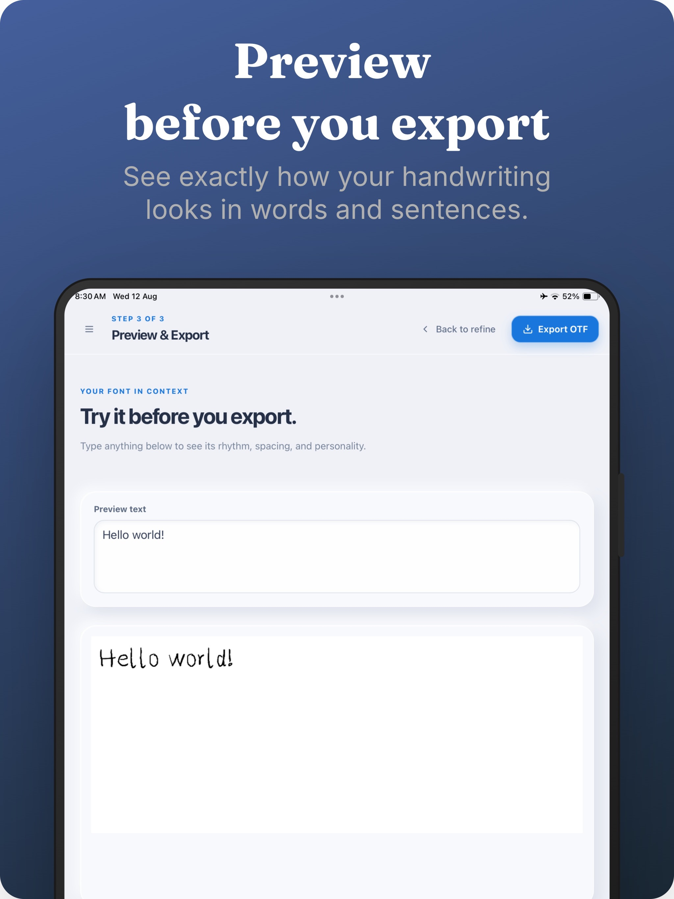
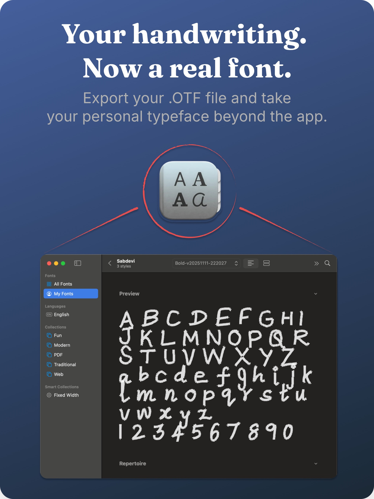

1
Draw your characters
Write uppercase letters, lowercase letters, and numbers with your finger or Apple Pencil.
Draw each letter, shape it until it feels right, and export your handwriting as a real OpenType font you can install and use beyond the app.
No account · No handwriting uploads · OTF export

Three simple steps
No scanning, desktop software, or font-design experience required.
Write uppercase letters, lowercase letters, and numbers with your finger or Apple Pencil.
Adjust each character’s size, position, and alignment. Smooth strokes where you want a cleaner finish.
Try your font in real words, name it, and export a Regular OTF or a Light, Regular, and Bold family.
Inside That’s My Font
Draw every character, refine the details, preview real words, and export the finished OpenType font.





Swipe to see all five App Store screenshots.
Built around your handwriting
The app gives you enough control to fix awkward letters without polishing away what makes your writing yours.
Use Apple Pencil or your finger, choose a stroke width, and add smoothing only when you need it.
Move, scale, and align individual glyphs instead of redrawing your entire alphabet.
Type your own words and sentences to check rhythm, spacing, and readability before export.
Export installable OTF files and share them through Files, AirDrop, or the iPadOS share sheet.
Private by design
Your drawings are the raw material for something personal. That is why font creation happens on your device.
Read the privacy policyQuestions
No. You can draw with your finger or use Apple Pencil when you want more precise input.
That’s My Font creates OpenType Font files in OTF format. You can export a Regular font or include Light and Bold variations.
No. You can export after drawing at least one character. For a useful everyday font, completing the full uppercase, lowercase, and number sets gives you the best result.
Your progress is saved locally on your device so you can leave the app and continue later.
Turn it into a font you can type with, share, and use in your own projects.
Get That’s My Font